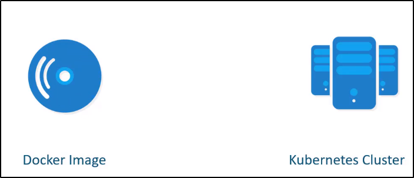

PODs
Prima di parlare dei PODs, chiariamo i concetti chiave:

A questo punto, supponiamo che un immagine sia stata developed,
creata come "Docker Image", e che sia pullabile tramite Kubernetes da un repository
come Docker Hub.
Inoltre, assumiamo che il Kubernetes cluster è stato già setup e funziona.
Può essere sia nel caso di un single node oppure più node (cluster).
L'unica cosa importante: i servizi devono essere in running state
Come abbiamo discusso in sezioni precedenti,
lo scopo di Kubernetes è di deployare un applicazione,
come serie di container, su un set di macchine
configurate come nodi di un cluster.
Kubernetes però non deploya direttamente
i container direttamente sui Worked nodes.
I Container sono encapsulati in un Kubernetes Object
chiamato proprio POD.

Definizione di POD: Singola instanza di un applicazione.
IL POD è l'oggetto più piccolo che puoi creare in Kubernetes.
Il caso di base più semplice:- Singolo Node
- Singolo POD
- Singolo Container
- Singola app (all'interno del POD)
Se il numero di persone che richiede l'applicativo aumenta,
devi aggiungere più instanze dell'applicazione.
Non possiamo avere due instanze dello stesso container, nello stesso POD.
Assolutamente NO.
Cosa possiamo fare, invece:- Creare un altro POD all'interno dello stesso Node
- Creare un altro POD in un altro Node

In sintesi: I POD hanno una relazione uno-ad-uno con i container
che stanno runnando al loro interno.
Per scalare un'applicazione: o crei più POD o di meno.
Non vai ad aggiungere più container dello stesso tipo nello stesso POD.
Cosa che si potrebbe fare è aggiungere container diversi nello stesso POD.
Ad esempio: Se un applicativo in Python necessita di un Container Helper particolare
per alcuni task. In questo caso, possiamo creare un POD con Python e l'Helper.
Quando creiamo questo POD o lo distruggiamo, va su tutti e due.
Inoltre, essendo che hanno lo stesso spazio di rete, possono comunicare
come localhost.


Come deployare i PODs
Il comando di "kubectl run" crea già un POD,
dove crea un instanza del container scelto.
Possiamo specificare l'opzione "--image=" per indicare
dove prendere l'immagine da inserire nel container
(come su Docker Hub)